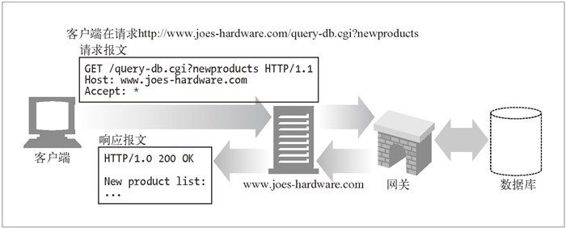
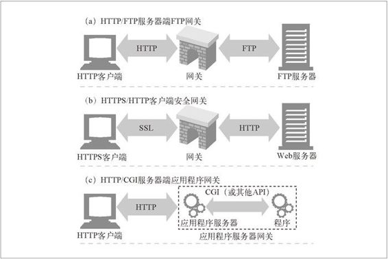

8.1 网关
HTTP 扩展和接口的发展是由用户需求驱动的。要在 Web 上发布更复杂资源的需求出现时，人们很快就明确了一点：单个应用程序无法处理所有这些能想到的资源。
为了解决这个问题，开发者提出了网关（gateway）的概念，网关可以作为某种翻译器使用，它抽象出了一种能够到达资源的方法。网关是资源和应用程序之间的粘合剂。应用程序可以（通过 HTTP 或其他已定义的接口）请求网关来处理某条请求，网关可以提供一条响应。网关可以向数据库发送查询语句，或者生成动态的内容，就像一个门一样：进去一条请求，出来一个响应。
图 8-1 显示的是一种资源网关。在这里，Joe 的五金商店服务器就是作为连接数据库内容的网关使用的——注意，客户端只是在通过 HTTP 请求资源，而 Joe 的五金商店的服务器在与网关进行交互以获取资源。

图 8-1 网关的魔力
有些网关会自动将 HTTP 流量转换为其他协议，这样 HTTP 客户端无需了解其他协议，就可以与其他应用程序进行交互了（参见图 8-2）。

图 8-2 三个 Web 网关实例
图 8-2 显示了三个网关的示例。
在图 8-2a 中，网关收到了对 FTP URL 的 HTTP 请求。然后网关打开 FTP 连接，并向 FTP 服务器发布适当的命令。然后将文档和正确的 HTTP 首部通过 HTTP 回送。
在图 8-2b 中，网关通过 SSL 收到了一条加密的 Web 请求，网关会对请求进行解密，1 然后向目标服务器转发一条普通的 HTTP 请求。可以将这些安全加速器直 接放在（通常处于同一场所的）Web 服务器前面，以便为原始服务器提供高性能 的加密机制。
1 网关上要安装适当的服务器证书。
在图 8-2c 中，网关通过应用程序服务器网关 API，将 HTTP 客户端连接到服务器端的应用程序上去。在网上的电子商店购物、查看天气预报，或者获取股票报价时，访问的就是应用程序服务器网关。
客户端和服务器端网关
Web 网关在一侧使用 HTTP 协议，在另一侧使用另一种协议。2
2 在不同 HTTP 版本之间进行转换的 Web 代理就像网关一样，它们会执行复杂的逻辑，以便在各个端点之间进行沟通。但因为它们在两侧使用的都是 HTTP，所以从技术上来讲，它们还是代理。
可以用一个斜杠来分隔客户端和服务器端协议，并以此对网关进行描述：
< 客户端协议 >/< 服务器端协议 >
因此，将 HTTP 客户端连接到 NNTP 新闻服务器的网关就是一个 HTTP/NNTP 网关。我们用术语服务器端网关和客户端网关来说明对话是在网关的哪一侧进行的。
服务器端网关（server-side gateway）通过 HTTP 与客户端对话，通过其他协议与服务器通信（HTTP/*）。
客户端网关（client-side gateway）通过其他协议与客户端对话，通过 HTTP 与服务器通信（*/HTTP）。